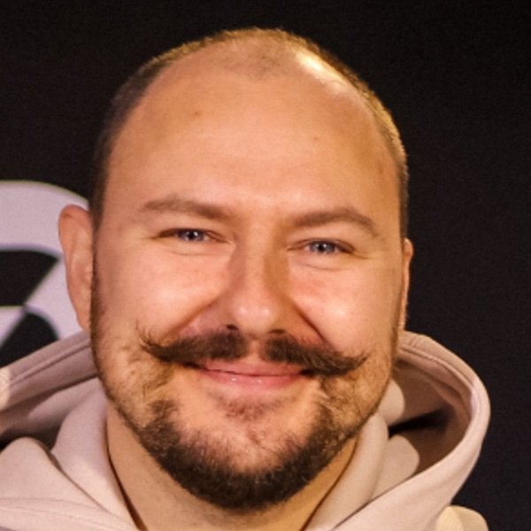
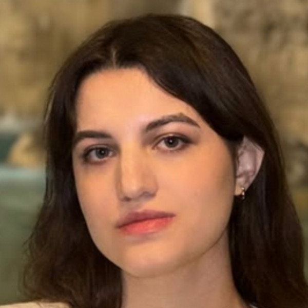

Три співзасновники. Двадцять людей. Одна теза
Найцінніше у вашому бізнесі лежить у головах засновників. Ми допомагаємо дістати це звідти — і перенести в LinkedIn, де цим одночасно можуть користуватися продажі, маркетинг і рекрутинг.
Метод, який ми спершу перевірили на собі
Свою першу компанію, рекрутингову агенцію, Євген і Алекс виростили з нуля без реклами й холодних дзвінків. Тільки контент і персоналізований аутріч у LinkedIn — щотижня, без пропусків. Клієнти почали писати першими.
Це помітив колишній роботодавець Алекса — людина, яка весь цей час спостерігала, що відбувається.
«Те, що ви робите для себе. Можете зробити це для нас?»
Юлія долучилася, щоб зібрати ту першу пропозицію. Утрьох ми заснували Content Chameleon, а його компанія стала нашим першим клієнтом. Цей клієнт досі з нами — вже шостий рік. Як і CEO, яку він найняв того самого місяця, коли ми підписали контракт.
Саме тому ми знаємо, як виводити компанії на західні ринки. Не тому, що обрали це як напрямок у стратегії. А тому, що наш перший клієнт продавав на Захід, найдовший клієнт продає на Захід, і майже все, що ми знаємо про LinkedIn, ми вивчили, роблячи саме це.
Люди, які ведуть роботу

До Content Chameleon Алекс займався бізнес-девелопментом. Він їздив на кожну велику конференцію. Його ніхто не знав. Про генерацію попиту, соціальний доказ і особистий бренд у LinkedIn він дізнався так само, як більшість, — спершу провалившись зі старим підходом. Потім запустив новий плейбук на собі, і той спрацював. Тепер він відповідає за стратегію і за голос, на якому тримається все, що публікує Content Chameleon.
Євген усю карʼєру провів у рекрутингу й корпоративному навчанні. Він добре розуміє людей. Той, кого він наймає, лишається — тому наші клієнти роками працюють з однією командою, а не з каруселлю акаунт-менеджерів. У сервісному бізнесі, де команда і є продуктом, це не мʼяка навичка. Це операційний рів.
Веде курс «Інтервʼю з експертом» →Юлія — найретельніша і найвідповідальніша з нас трьох. Вона будує процеси. В агенції, де на кожному акаунті чотири ролі працюють узгоджено, розсилка йде щотижня по кількох каналах, паралельно виробляється контент, а частина клієнтів уже на шостому році співпраці, робота лишається стабільною тільки тому, що хтось побудував системи, які роблять її стабільною. Це і є робота Юлії.

Яна прийшла в Content Chameleon у перший рік і не пішла. Шість років потому вона досі веде наш найдовший акаунт — той самий клієнт, та сама PM, від самого початку. Надійна, з тих менеджерок, які читають те, чого клієнт не сказав, так само уважно, як і сказане. Операційний хребет, на який спирається решта команди. Коли ми кажемо, що наші PM лишаються з вами, Яна — це доказ.

Каріна керує функцією Engagement Manager / SDR на всіх акаунтах. Саме вона вирішує, хто з наших спеціалістів із розсилки працюватиме на вашому проєкті — під складність вашого ICP, обсяг співпраці й конференції, які вас цікавлять.

Ксенія курує всіх копірайтерів у Content Chameleon. Вона ж особисто проводить сесії видобутку контенту з амбасадорами високого рівня, коли акаунт цього вимагає. Якщо ви CEO або засновник, інтервʼю у вас бере не джуніор-копірайтер, а Ксенія або хтось із нас трьох.
Веде курс «Сторітел та хуки» →Ми не постимо заради постів
Ми заснували Content Chameleon, бо кожна LinkedIn-агенція, яку ми бачили, робила одне й те саме: заганяла клієнтів у шаблони, після яких усі звучали однаково.
Ті самі гачки. Те саме приховане хизування. Те саме «згодні?» наприкінці кожного поста.
Це не гострайтинг. Це плагіат з додатковими кроками.
Хамелеон адаптується. Ми щотижня сідаємо з вашою командою, витягуємо історії, якими ви б ніколи не подумали ділитися, і пишемо пости, що звучать як ви у вашій найкращій формі. Ми будуємо вашу мережу з людей, які справді купують те, що ви продаєте. І ведемо розсилку, яка читається як написана людиною, бо так і є.
Шість років потому ми продаємо те саме. Просто робимо це краще.
Чому саме західні ринки
Наш перший платний клієнт продавав на Захід. Найдовший проєкт — теж. Робота на конференціях, якою ми відомі, — це міжнародні події, де зустрічаються західні покупці. За шість років виявилося, що всі наші найкращі клієнти мали одне й те саме завдання. Збіг був настільки стабільним, що лишатися універсальною агенцією означало б ігнорувати те, що насправді працює.
Східноєвропейська географія виявилася активом, а не перешкодою. Ми знаємо, як тут будуються компанії, і знаємо, чого від них очікують по той бік. Ми ближче до вашої реальності, ніж будь-яка американська чи британська агенція, — і водночас шість років щодня говоримо з їхнім ринком.
Ми не обирали цю спеціалізацію. Вона обрала нас шість років тому — і ми досі тут.
Ще 15 людей ведуть щоденну роботу
Копірайтери, engagement-менеджери, проєктні менеджери — команда, яка щотижня робить саму роботу. Плюс дизайнер, рекрутер, фінансист і юрист, який тримає нас подалі від проблем.
Їх наймає Євген. Вони зазвичай лишаються.
Як ми наймаємо
Рекрутингом займається Євген. Він робить це роками — спершу в нашій рекрутинговій агенції, тепер тут. Він знає, що шукати. Ті, кого він наймає, лишаються — тому ми можемо продавати тяглість як реальну обіцянку, а не маркетинговий рядок.
Якщо ви працюєте з нами два роки, ваша PM — найімовірніше, та сама. Як і копірайтер. Як і engagement-менеджер. Не тому, що вони звʼязані контрактом. А тому, що їм подобається робота, і Євген побудував команду, з якої не йдуть.
Хочете поговорити про LinkedIn для вашого бізнесу?
Ми втрьох по черзі беремо частину дзвінків. Каріна і Ксенія теж. З ким би ви не говорили, це буде 30 хвилин про вашу команду, ваші конференції і ваш ICP — і чесна відповідь, чи спрацює вам те, що ми продаємо.
Забронювати зустріч →Або напишіть нам: alex@content-chameleon.com